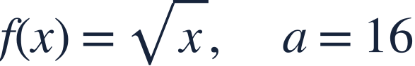
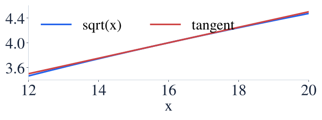
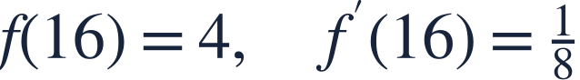
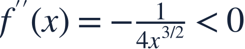
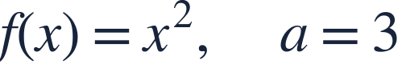

Linearization and error direction
선형근사와 오차
A tangent line gives a nearby estimate and concavity tells its error direction.
접선으로 가까운 값을 추정하고 오목성으로 오차 방향을 판단합니다.
A tangent line gives a nearby estimate and concavity tells its error direction.
접선으로 가까운 값을 추정하고 오목성으로 오차 방향을 판단합니다.

Choose a nearby input with a simple exact function value.
함숫값을 정확히 아는 가까운 입력을 고르세요.

Near x=16, use the tangent line to replace a difficult square root.
x=16 근처에서는 어려운 제곱근 대신 접선의 값을 사용합니다.

The tangent line needs the known height and slope.
접선에는 알고 있는 높이와 기울기가 필요합니다.
Use the input change x−16, not x itself.
입력 자체가 아니라 변화량 x−16을 씁니다.

The graph is concave down, so this tangent estimate is too high.
그래프가 아래로 오목하므로 이 접선 추정값은 실제보다 큽니다.
The error direction depends on concavity, not on whether the slope is positive.
오차 방향은 기울기의 부호가 아니라 오목성으로 판단합니다.

Use linearization to estimate f(3.1). Is it too high or too low?
선형근사로 f(3.1)을 추정하세요. 실제보다 큰가요, 작은가요?